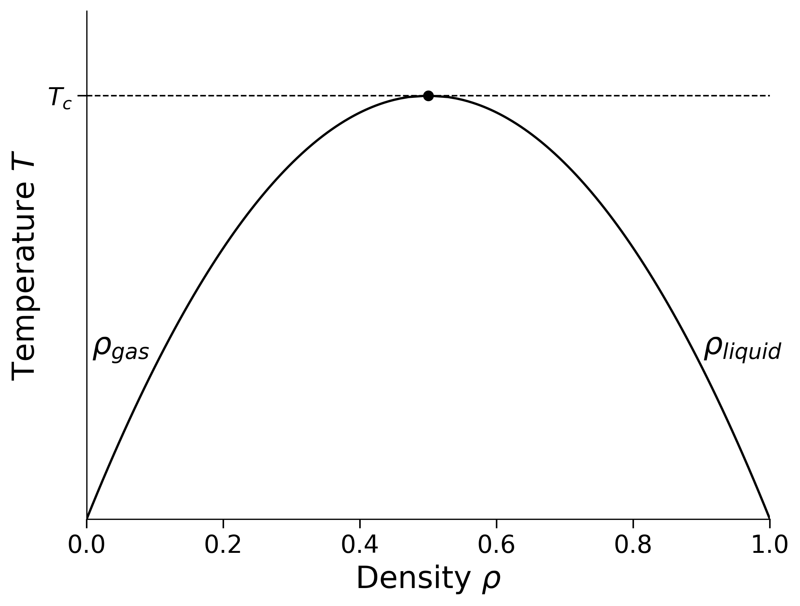

import numpy as np
import Full_lattice_gas_GCE as lg
STUDENT_NUMBER = 1234567 # replace with your own student number
def seed_for(run_id):
return (int(STUDENT_NUMBER) + 104729 * int(run_id)) % (2**32 - 1)
L = 24
result = lg.simulate_state_point(
L=L,
T=1.0,
mu=-2.0,
epsilon=1.0,
initial_density=0.5,
n_sweeps_eq=5000,
n_sweeps_per_meas=10,
n_meas=2000,
seed=seed_for(1),
)PHYSM0071: Coursework 1
Correlations and fluctuations in a two-dimensional lattice gas
1. Aim
Use grand-canonical Monte Carlo simulation to investigate the two-dimensional square-lattice gas, including its equation of state, density response, spatial correlations and density distribution. The Monte Carlo algorithm is supplied; you will write short Python programs to run and analyse it, but assessment focuses on the physics rather than programming technique.
2. Physical background
2.1 The lattice gas
Each site of an \(L\times L\) square lattice is occupied \((c_i=1)\) or vacant \((c_i=0)\), with periodic boundaries. The number of lattice sites is \(V=L^2\). Define
\[ N=\sum_i c_i,\qquad \rho=\frac{N}{V}, \]
and
\[ E=-\epsilon\sum_{\langle i,j\rangle}c_i c_j . \]
Here \(\epsilon>0\) is the nearest-neighbour attraction and \(\langle i,j\rangle\) denotes each distinct nearest-neighbour pair once. The grand-canonical probability of a configuration is
\[ P(\{c_i\})\propto \exp[-\beta(E-\mu N)], \qquad \beta=(k_{\rm B}T)^{-1}. \]
Here \(\mu\) is the chemical potential, \(T\) is the temperature and \(k_{\rm B}\) is Boltzmann’s constant. All simulations use \(\epsilon=k_{\rm B}=1\) unless stated otherwise.
2.2 Phase behaviour
The phase diagram below shows the coexisting low- and high-density branches, which meet at \(\rho_c=1/2\) and \(T=T_c\). Mean densities between the branches lie in the two-phase region.

In the thermodynamic limit, the density changes discontinuously across coexistence for \(T<T_c\) and continuously for \(T>T_c\). Particle–hole symmetry makes the two coexistence densities symmetric about \(\rho=1/2\). You will derive the coexistence chemical potential and \(T_c\).
2.3 Grand-canonical Monte Carlo
The simulation samples the grand-canonical probability above. One Metropolis trial consists of:
- choosing a lattice site uniformly at random;
- proposing to insert a particle if it is vacant, or remove it if it is occupied;
- calculating \(\Delta E\), \(\Delta N\), and hence \(\Delta(E-\mu N)=\Delta E-\mu\Delta N\);
- accepting the move with probability \[ p_{\rm acc}=\min\{1,\exp[-\beta\Delta(E-\mu N)]\}. \]
One Monte Carlo sweep is \(L^2\) such trials. In a simulation, an initial equilibration period is discarded before measurements are taken. Successive measurements are generally correlated, and this must be allowed for when estimating uncertainties.
3. Carrying out the computational work
3.1 Preparatory work in Noteable
Complete this setup during the week before the exercises in Section 4 are released. It is not assessed; its purpose is to identify any access or software problems before you begin the coursework.
On the PHYSM0071 Blackboard page, open Resources and tools, scroll to Noteable, and launch it. If you are working off campus, connect to the University VPN first.
Select the Jupyter Notebook (Legacy) server option.
When Noteable opens, click +GitRepo, enter
https://github.com/nbwilding/Lattice-gas-courseworkand press Clone (no username or password is required). This creates a folder called
Lattice-gas-courseworkcontainingFull_lattice_gas_GCE.py.Open a terminal in Noteable, change into the downloaded folder,
cd Lattice-gas-courseworkand run the following short test, replacing
1234567with your own seven-digit student number:python Full_lattice_gas_GCE.py \ --L 12 \ --temperatures 1.0 \ --chemical-potentials -2.0 \ --equilibration-sweeps 100 \ --sweeps-per-measurement 2 \ --measurements 100 \ --seed 1234567 \ --output test_outputCheck that the command finishes without an error and creates the
test_outputfolder. The first run may pause briefly while Numba compiles the simulation functions.
This is only a setup check; do not use its results in the report or modify Full_lattice_gas_GCE.py. Once Section 4 is released, put your simulation driver and analysis code in separate files. Report setup problems before the exercises are released, including the full error message.
3.2 Using and analysing the supplied program
Full_lattice_gas_GCE.py implements the Monte Carlo moves, energy bookkeeping, Fourier transforms and radial shell averaging. It uses Numba automatically in the Notable environment; the first call may be slower while the functions are compiled.
The program may be imported and called as follows:
The returned dictionary entries needed here are:
| Entry | Contents |
|---|---|
lattice |
final \(L\times L\) occupancy array |
particle_samples |
particle number measured after each sampling interval |
structure_factor |
connected \(S(k_x,k_y)\) averaged over the complete run |
acceptance_equilibration, acceptance_sampling |
acceptance fractions during the two parts of the run |
The run lengths above are illustrative; choose final lengths from evidence.
Taking the lattice spacing as one, the program defines
\[ n_{\mathbf k}=\sum_j c_j e^{-i\mathbf k\cdot\mathbf r_j}, \qquad S(\mathbf k)=\frac{1}{V} \left[\langle|n_{\mathbf k}|^2\rangle -|\langle n_{\mathbf k}\rangle|^2\right]. \]
Here \(\mathbf r_j\) is the position of site \(j\) and the allowed wavevectors are \(\mathbf k=(2\pi/L)(n_x,n_y)\), with integer \(n_x,n_y\). A radial average groups wavevectors having the same magnitude \(k=|\mathbf k|\).
radial_shell_average() converts a two-dimensional field into a radial average, while save_state_point_results() saves the raw and processed data and basic diagnostic figures.
Write a short Python program to:
- call
simulate_state_point(), normally using loops for parameter grids; - assign reproducible seeds and record each production run;
- extract the measurements and calculate the requested statistics, uncertainties and fits;
- produce the report figures and run summary.
You need not modify the Monte Carlo algorithm, implement Fourier transforms or write a radial-averaging routine. NumPy, Matplotlib and SciPy may be used. Programming style is not marked, but the submitted code must reproduce the results.
Use your seven-digit student number as the base seed and give every independent run a distinct integer identifier, as illustrated by seed_for() above. If running from the command line, provide the student number through --seed. Do not repeat runs merely until a preferred result is obtained. The following conversions will be useful:
V = L**2
N = result["particle_samples"]
rho = N / V
S2d = result["structure_factor"]
shell, S_radial, degeneracy = lg.radial_shell_average(S2d)
k = 2 * np.pi * shell / LFor every production run, save the time series, parameters, seed, averaged structure factor, final configuration and acceptance fractions. The supplied saving function may be used. Retain these files until marking is complete.
3.3 Equilibration and uncertainties
Use short exploratory runs to choose the equilibration period and sampling interval, checking different parts of a run or initial densities. Reasonable starting points are:
| Work | Equilibration sweeps | Sweeps between measurements | Number of measurements |
|---|---|---|---|
| Sections 4.2–4.3 | \(5\,000\) | 5–10 | \(5\,000\) |
| Section 4.4 | \(10\,000\) | 10 | \(10\,000\) per independent run |
| Section 4.5 | \(20\,000\) | 10 | \(20\,000\)–\(40\,000\) per independent run |
Critical slowing down may require longer runs near \(T_c\), especially for larger systems in Section 4.5. Extend a run if its halves disagree, both density sectors are poorly represented, or block uncertainties have not stabilised; increasing only the measurement spacing does not increase the total sampling.
Estimate uncertainties from independent runs or blocks of a stationary time series. They are required for \(\langle N\rangle\), \(\operatorname{var}(N)\), \(\langle\rho\rangle\), \(\chi_\rho\), \(\xi\) and \(U_4\), but not for every distribution bin. Since structure_factor is a whole-run average, estimate the uncertainty in \(\xi\) by fitting independent runs separately.
4. The exercises
Presentation convention. Within each exercise, the tasks you are required to carry out are set in italics. Background, definitions, reference information and hints remain in normal type.
4.1 Mapping and predictions [6 marks]
The lattice gas is exactly isomorphic to the Ising model. This identifies its coexistence and critical point and relates magnetisation to density.
The grand partition function can be written as
\[ \Xi=\sum_{\{c_i\}}\exp[-\beta(E-\mu N)], \]
where the sum runs over all possible configurations of occupied and vacant sites. The corresponding Ising spins are introduced through
\[ c_i=\frac{1+s_i}{2},\qquad s_i=\pm1 . \]
The magnetisation per site is \(m=V^{-1}\sum_i s_i\).
The transformed grand-canonical Hamiltonian \(E-\mu N\) has the form of an Ising Hamiltonian plus a configuration-independent constant. We use the convention
\[ \mathcal H_{\rm Ising} =-J\sum_{\langle i,j\rangle}s_i s_j -H\sum_i s_i, \]
where \(J\) is the nearest-neighbour coupling and \(H\) is the external field in energy units; no factor of \(\beta\) is included in either quantity. Thus,
\[ E-\mu N=\mathcal H_{\rm Ising}+C, \]
Here \(C\) is independent of the spin configuration. It cancels from normalised probabilities and does not affect phase behaviour, but must be retained when relating the partition functions.
Starting from the lattice-gas Hamiltonian:
- derive the transformed Hamiltonian and identify \(J\), \(H\) and \(C\);
- determine \(\mu_{\rm coex}\), the exact lattice-gas critical temperature \(T_c\), and the relation between \(\rho\) and the Ising magnetisation per site \(m\);
- obtain the mean-field prediction for \(T_c\) and explain briefly why it differs from the exact result;
- derive the change in \(E-\mu N\) for an insertion/removal move and identify the corresponding calculation in the supplied program.
If you prefer, you may include a clear scan of a handwritten derivation in the report; mathematical typesetting is not required.
Hints. On the square lattice \(q=4\) and there are \(qV/2\) distinct nearest-neighbour bonds. It is useful to note that
\[ \sum_{\langle i,j\rangle}(s_i+s_j)=q\sum_i s_i. \]
Collect the pair, field and constant terms separately. Coexistence has \(H=0\). For mean-field theory, linearize \(m=\tanh[\beta(qJm+H)]\) about \(m=0\). For a trial move, use \(\delta c=1-2c_i\), count occupied neighbours and search the program for delta_K. See lecture-note Chapter 4 for the Ising model and Chapter 5 for mean-field theory.
For reference, the zero-field square-lattice Ising critical temperature is
\[ \frac{k_{\rm B}T_c^{\rm Ising}}{J} =\frac{2}{\ln(1+\sqrt{2})}. \]
Simulation values. To prevent a mapping error from affecting later work, use
\[ \mu_{\rm coex}=-2\epsilon, \qquad k_{\rm B}T_c=\frac{\epsilon}{2\ln(1+\sqrt{2})}. \]
Thus, for \(\epsilon=k_{\rm B}=1\),
\[ \mu_{\rm coex}=-2, \qquad T_c\simeq0.5673. \]
Use these values in the remaining exercises even if your mapping gives a different result.
4.2 Validation [6 marks]
Noninteracting lattice gas
For \(\epsilon=0\), the sites are independent, with
\[ p=\langle\rho\rangle =\frac{e^{\beta\mu}}{1+e^{\beta\mu}}, \]
\[ \langle N\rangle=Vp,\qquad \operatorname{var}(N)=Vp(1-p), \]
and binomial \(P(N)\).
\[ P(N)=\binom{V}{N}p^N(1-p)^{V-N}. \]
At \(L=20\), \(T=1\), simulate \(\mu=-1,0,1\).
- Compare the measured mean and variance of \(N\) with the exact values at all three chemical potentials, including uncertainties that allow for correlated samples.
- At \(\mu=-1\), compare the complete measured \(P(N)\) with the binomial distribution.
- For the same \(\mu=-1\) run, show the density time series and use it to justify the equilibration and sampling choices.
Hint. Use np.bincount(N, minlength=V+1) to include unvisited values over \(N=0,\ldots,V\). Estimate the variance separately in blocks or independent runs to obtain its uncertainty. Do not evaluate the factorials in the binomial coefficient directly- the exact distribution can be calculated safely using scipy.stats.binom.pmf(N, V, p)
4.3 Equation of state and density response [10 marks]
Use \(L=24\) at
\[ T=1.5T_c,\qquad T=1.15T_c. \]
At both temperatures use the same grid of at least five chemical potentials, distributed symmetrically about \(\mu_{\rm coex}\) and spanning the low- and high-density regimes.
Plot the two equations of state \(\langle\rho\rangle(\mu)\) together. Discuss their particle–hole symmetry and the change in slope on approaching \(T_c\). For at least one pair of points equidistant from coexistence, test quantitatively whether
\[ \langle\rho\rangle_{\mu_{\rm coex}+\Delta\mu} =1-\langle\rho\rangle_{\mu_{\rm coex}-\Delta\mu} \]
within the combined uncertainty.
Near coexistence, define the density response by
\[ \chi_\rho= \left(\frac{\partial\langle\rho\rangle}{\partial\mu}\right)_T \]
Estimate this response in two independent ways:
- from a numerical derivative of the equation of state;
- from \[ \chi_\rho=\beta V [\langle\rho^2\rangle-\langle\rho\rangle^2]; \]
Also verify that \(\chi_\rho=\beta S(0)\) reproduces the fluctuation result, using the structure-factor convention of the supplied program. Compare the finite-difference and fluctuation estimates, including their uncertainties, and comment on the likely cause of any disagreement.
Hint. A grid suitable for displaying the equation of state may be too coarse for estimating its derivative. Use additional points near coexistence in the central difference
\[ \chi_\rho(h)\simeq \frac{\langle\rho\rangle_{\mu_{\rm coex}+h} -\langle\rho\rangle_{\mu_{\rm coex}-h}}{2h}. \]
Vary \(h\) and propagate the density uncertainties.
4.4 Spatial correlations [8 marks]
At \(L=24\) and \(\mu=\mu_{\rm coex}\), study the following temperatures, using independent production runs at each temperature so that the uncertainty in \(\xi\) can be estimated:
\[ \frac{T}{T_c}=1.50,\quad 1.25,\quad 1.10,\quad 1.05. \]
For each temperature:
- show a representative equilibrated configuration;
- calculate the radially averaged connected structure factor \(S(k)\);
- explain the changes in the configuration and the low-\(k\) behaviour.
At sufficiently small \(k\), the structure factor above \(T_c\) is expected to have the form
\[ S(k)=\frac{A}{1+(k\xi)^2}. \]
Here \(A\) is an amplitude and \(\xi\) is the correlation length, which characterises the distance over which density fluctuations are correlated.
Fit the small-\(k\) data to this form. Show the fitted data and curve, identify the included wavevectors, and quote an uncertainty in \(\xi\). At \(T=1.05T_c\), test sensitivity to the upper limit of the fit range. Plot the final \(\xi\) estimates against
\[ t=\frac{T-T_c}{T_c}. \]
Near the critical point the expected growth is \(\xi\propto t^{-\nu}\). The exact two-dimensional Ising exponent is \(\nu=1\), whereas mean-field theory gives \(\nu=1/2\).
Discuss whether the available data distinguish these behaviours, without assuming that an accurate exponent can be obtained from this limited range.
Fitting hint. Treat \(A\) and \(\xi\) as free parameters and fit the stated form directly to \(S(k)\), for example using scipy.optimize.curve_fit. Begin with \(k=0\) and the first few nonzero shells. Apply the same fit procedure to each independent run and use the variation in the fitted \(\xi\) values to estimate its uncertainty. At \(1.05T_c\), repeat the fit after adding or removing the largest-\(k\) shell to test the fit-range sensitivity.
Other hints. radial_shell_average groups modes with the same \(n_x^2+n_y^2\), where \(k=(2\pi/L)\sqrt{n_x^2+n_y^2}\). When \(\xi\) approaches \(L\), finite size limits the exponent test. See lecture-note Section 2.2 for \(S(k)\) and \(\xi\), and Chapter 3 for critical growth.
4.5 Density distributions and finite-size effects [10 marks]
Let \(P_L(\rho)\) denote the probability of observing the instantaneous density \(\rho=N/V\) in a system of linear size \(L\), normalised so that \(\sum_N P_L(N/V)=1\). Define
\[ m=2\rho-1. \]
Evolution of \(P_L(\rho)\)
At \(L=20\) and \(\mu=\mu_{\rm coex}\), measure \(P_L(\rho)\) at the following temperatures:
\[ \frac{T}{T_c}=1.20,\quad 1.00,\quad 0.90. \]
For each temperature, show the density time series and the normalised distribution or distributions actually measured, and explain their evolution.
Below \(T_c\), perform independent runs from low- and high-density initial states and determine whether either run changes density sector. If the runs remain trapped, show the two sector-conditioned distributions separately and compare them after applying the particle–hole reflection \(\rho\to1-\rho\). Explain why \(\langle\rho\rangle\simeq1/2\) does not imply that typical configurations are homogeneous states of density \(1/2\).
Hints. Use the common grid \(N=0,\ldots,V\); particle–hole reflection reverses the probability array. Changes in the sign of \(m\) show movement between density sectors.
Critical distribution and Binder cumulant
At \(T=T_c\) and \(\mu=\mu_{\rm coex}\), use the following system sizes:
\[ L=12,\quad16,\quad20,\quad24, \]
Use one sufficiently long production run for each size and a second independent run for \(L=24\). The fourth-order Binder cumulant is a dimensionless measure of the shape of a distribution:
\[ U_4(L)= 1-\frac{\langle m^4\rangle} {3\langle m^2\rangle^2}. \]
For orientation, \(U_4=0\) for a zero-mean Gaussian distribution of \(m\), while two narrow symmetric peaks at \(m=\pm m_0\) give \(U_4\to2/3\). At the critical point, the broad non-Gaussian distribution gives an intermediate value. For a periodic square, the large-\(L\) reference value is
\[ U_4^*\simeq0.61069. \]
Show \(P_L(\rho)\) for all four sizes. Calculate \(U_4(L)\) with a sampling uncertainty for each size. Compare the values across sizes and with \(U_4^*\), and discuss whether any differences are consistent with sampling uncertainty, finite-size corrections or inadequate sampling.
At criticality, the infinite system has no finite correlation length; in a finite system, \(L\) limits the largest fluctuations. A dimensionless quantity such as \(U_4\) should therefore become approximately independent of \(L\), apart from finite-size corrections.
Use the size dependence of \(U_4(L)\) to comment on scale invariance at criticality, and explain what this implies about the range of density-fluctuation or domain sizes in typical critical configurations.
For at least one critical run, justify that the sampling is adequate by showing that the block uncertainty is reasonably stable, the first and second halves agree, and both signs of \(m\) are sampled.
Hints. Calculate \(U_4\) within each block or run to retain the correlation between \(\langle m^2\rangle\) and \(\langle m^4\rangle\). See lecture-note Section 2.2.2 for temporal correlations and Section 7 for finite-size scaling.
5. Your report
Produce a report of no more than 6 sides of A4, including figures and tables, using at least 11-point font and normal margins. Focus on results and their physical interpretation. Marks will be deducted for exceeding the limit.
Begin the first page with PHYSM0071: Coursework 1, followed by your full name and student number. A separate title page is not needed.
Lay out the report using the following headings:
- Mapping and predictions
- Validation
- Equation of state and density response
- Spatial correlations
- Density distributions and finite-size effects
Do not add an abstract, introduction, references or code listings.
Use labelled axes, informative captions and multi-panel figures where helpful. Include uncertainties and explain how time correlations were allowed for.
Include a compact production-run summary giving, for each run or grouped set of runs, the state points \((L,T,\mu,\epsilon)\), run identifiers or seeds, initial density, equilibration length, measurement interval and number of measurements. Regular parameter grids and independent repeats may be grouped where the information remains unambiguous. Do not include unused exploratory runs.*
Include the following declaration at the end of the report:
I have not made use of Artificial Intelligence tools in completing this assessment beyond those of category 2 in the University’s categorisation scheme.
Submit the report in PDF format via Blackboard, named
familyname_givenname_coursework1.pdf.Also submit a ZIP archive containing the code used to run the simulations and analyse the results, named
familyname_givenname_coursework1_code.zip. Include a short README naming the simulation and analysis scripts and explaining how the reported figures are generated. Do not include the supplied Monte Carlo program or the raw simulation data in the ZIP.Retain the raw data until marking is complete; they may be requested to clarify provenance or uncertainty analysis.
The report will be marked out of 40. As in a laboratory report, the marking will focus on:
- whether the results are physically plausible;
- whether the pertinent features have been identified;
- whether the results and analysis are described clearly;
- whether the observations are explained correctly and clearly using appropriate concepts;
- whether quantitative checks, uncertainties and analysis choices are adequately justified.